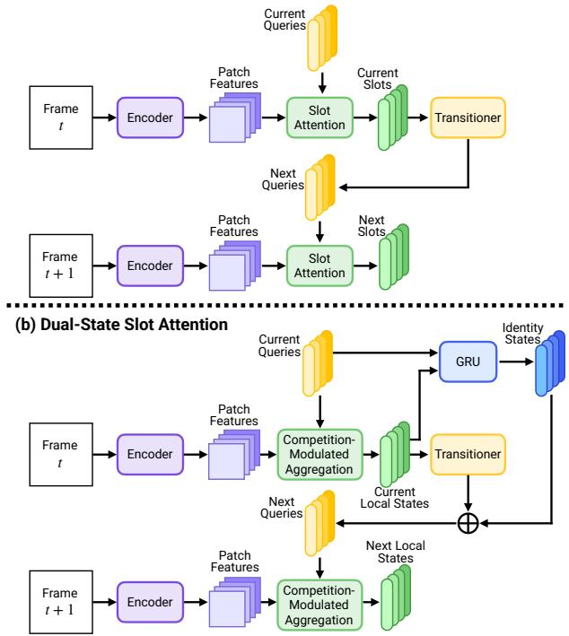

Dual-State Slot Attention: Decoupling Appearance and Identity for Video Object-Centric Learning Sieu Tran, Duc Nguyen, Hao Vo, Khoa Vo, Ngan Le；arXiv 元数据未稳定列机构时按作者列表记录。 arXiv 新增 原文链接
编号2606.12601优先级P0类别arXiv 新增会议arXiv 新增方法Dual-State Slot Attention 将每个 slot 分为 per-frame local appearance state 与跨帧 identity state；identity state 通过 recurrent transition 做 temporal filter，并用 competition-modulated aggregation 抑制弱匹配 slot 的错误更新。来源arXiv / OpenReview
Figureure 2 · : Overview of Dual-State Slot Attention (DSSA)Figure 2: Overview of Dual-State Slot Attention (DSSA). At each frame, a frozen encoder extracts patch features, from which competition-modulated aggregation (CMA) produces local states, while slot assignment masks are derived from the slot-token attention assignments. The local states encode frame-specific appearance information, whereas identity states retain temporally stable object information distilled from the local states through a stop-gradient GRU. Combined with the transitioner output, these identity states form the next-frame queries. By separating local appearance from persistent identity, DSSA assigns frame-specific appearance and temporally stable object information to different latent states. Training uses reconstruction, auxiliary identity reconstruction, and temporal identity consistency losses.这张图概括 Dual-State Slot Attention 的整体方法流程。阅读时先看模块之间传递的训练信号，再看作者如何把目标拆成可优化的子问题。

(a) Previous Video Slot Attention Figure 1: Comparison of video object-centric learning (O(a) Previous Video Slot Attention Figure 1: Comparison of video object-centric learning (OCL) approaches. (a) Prior video-based Slot Attention methods encode both appearance and identity within a single slot vector, causing reconstruction and temporal consistency to compete over a shared representation. (b) Our proposed DSSA assigns each slot a dedicated local state for per-frame reconstruction and an identity state for temporally stable object tracking, resolving this conflict by design.这张图/表用于判断 Dual-State Slot Attention 的实验收益来自哪里。重点看替换、消融或跨模型设置下趋势是否一致，而不是只看单个最高分。
核心问题
它给视频 SSL 的“对象持久性”和“时序身份保持”提供了结构化 inductive bias。
方法拆解
Dual-State Slot Attention 将每个 slot 分为 per-frame local appearance state 与跨帧 identity state；identity state 通过 recurrent transition 做 temporal filter，并用 competition-modulated aggregation 抑制弱匹配 slot 的错误更新。